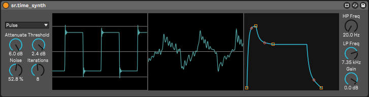

Overview
Stochastic Resonance is not a single model but a technique for studying stochastic dynamical systems, first introduced by Benzi, Parisi, Sutera and Vulpiani (1981). Despite being observed in fields ranging from physics to sensory biology, its application to sound has remained largely unexplored. This project provides efficient, real-time implementations of several Stochastic Resonance algorithms as a package for Max/MSP.
Algorithms
Four algorithms are implemented, each suited to different applications:
Time Domain
Threshold Stochastic Resonance (TSR) — The simplest form: noise is added to a signal and a constant threshold is applied. When the signal is weak enough to fall mostly below the threshold, the noise helps push it through, revealing structure that was otherwise hidden.
Multi-unit TSR (MTSR) — Averages multiple TSR outputs to reduce noise, producing a cleaner representation of the expected result. Inspired by N-unit models from sensory biology.

Figure 1. Max for Live MIDI synthesizer using sr.timedom~.
Frequency Domain
Spectral TSR — Applies noise and a threshold function in the frequency domain. Noise is balanced according to an equal-loudness contour (C-weighting), and the threshold function is user-configurable, allowing frequency-dependent control over which spectral components survive.
Spectral MTSR — Averages multiple Spectral TSR outputs for smoother results.
Figure 2. Max for Live device using sr.freqdom~ as a sound effect.
Applications
Sound Synthesis — When a simple signal (sine, saw, noise) is fed through the objects, the result is a novel form of synthesis. The input waveform type becomes an additional parameter alongside all algorithm parameters, yielding a vast array of sound types.
Recovering Weak Signals — Noise combined with a detection function can reveal signals that are otherwise undetectable, improving the signal-to-noise ratio under certain circumstances.
Missing Fundamental / Ghost Stochastic Resonance — For a harmonic complex with an absent fundamental, applying Stochastic Resonance can cause the missing pitch to suddenly emerge—a phenomenon with immense creative potential.
References
- Gutiérrez, E. & Cádiz, R. (2024). Stochastic Resonance: Molding Sounds from Noise. In Proceedings of the 21st Sound and Music Computing Conference (SMC 2024), Santiago, Chile.
- Benzi, R., Sutera, A., & Vulpiani, A. (1981). The mechanism of stochastic resonance. Journal of Physics A: Mathematical and General, 14(11), L453.
- Gammaitoni, L., Hänggi, P., Jung, P., & Marchesoni, F. (1998). Stochastic resonance. Reviews of Modern Physics, 70(1), 223–287.